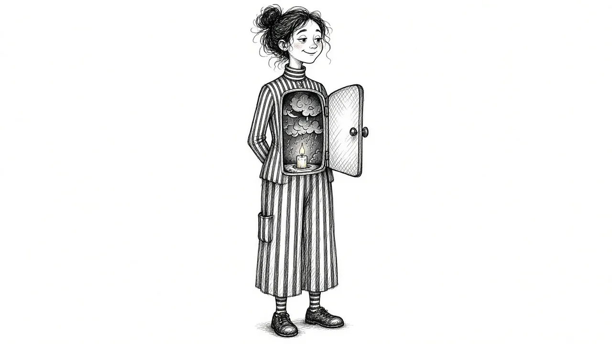

The Hidden Side of Grief: What Happens Inside When No One Sees

From the outside, you might look like you are doing fine. You go to work. You answer emails. You smile at the right moments. People tell you how strong you are. Inside, it is a different story. You are exhausted. You replay conversations. You talk to them in your head. You feel a dread you cannot name.
Much of grief happens where no one can see it. This guide explores the hidden side of grief: the inner experiences that rarely get talked about, why they happen, and how to care for yourself when your grief is mostly invisible.
Why so much grief is hidden
There are many reasons grief goes underground.
- Social expectations. Many workplaces, schools, and communities expect people to return to normal quickly.
- Not wanting to burden others. Grieving people often protect friends and family from their pain.
- Personal style. Some people naturally process emotions privately.
- Cultural norms. In some families and cultures, grief is expected to be kept quiet.
- Fear of judgment. People may worry their thoughts or feelings are strange or wrong.
Hidden grief is not fake grief. It is real, often deep, and sometimes all the more tiring because it has to be carried in secret.
What happens inside when no one sees
Constant mental conversation
Many grieving people talk to the person who died in their head. They tell them about their day, argue with them, apologize, or ask for advice. This is common and can be a form of continuing bonds.
Replaying and searching
The mind often replays the death, the last conversation, or moments that might have gone differently. It searches for explanations and alternate endings. See Why Your Brain Keeps Replaying Their Last Days.
Sudden jolts
A smell, a song, a car like theirs. Tiny reminders can send a jolt through your body that no one else notices.
Secret rituals
Some people keep their loved one's voicemail, wear their clothes, sleep on their side of the bed, or set out their mug. These quiet rituals are often private ways of staying close. See grief habits and what they mean.
Thoughts you would never say out loud
Grief can bring thoughts that feel shameful: relief that the suffering is over, anger at the person for leaving, envy of people who still have their loved ones, or questions about faith. These are far more common than most people realize.
A different sense of time
Many grieving people feel split between before and after. Time can feel slow, blurry, or strangely still.
Fear
Loss can make the world feel unsafe. Some people quietly fear that others they love will die too, or they feel constantly on edge.
The parts of grief you hide are often the parts that most need gentleness.
The cost of carrying grief in secret
Hiding grief can feel necessary, and sometimes it is. But it often comes with a cost:
- Exhaustion. Keeping up a calm surface while grieving takes enormous energy.
- Loneliness. When no one knows how you feel, it is hard to feel supported.
- Physical symptoms. Unexpressed grief often shows up as tension, headaches, or sleep problems.
- Sudden floods. Hidden grief can break through at unexpected times.
- Self-doubt. Without anyone to reflect your experience back to you, you may wonder whether your feelings are normal.
Finding small ways to let it out
You do not need to share everything with everyone. But finding even small outlets can ease the weight.
Tell one person
Choose one safe person and tell them a little more than you usually would. "I am not as okay as I look" can open a door.
Write it down
Journaling can give hidden thoughts a place to land. Some people write letters to the person who died. Others simply list what they are feeling.
Create a private ritual
Light a candle, visit a meaningful place, or set aside a few minutes each day to remember. Giving grief a scheduled moment can make it easier to carry the rest of the time.
Use your body
Walking, running, stretching, or even crying in the shower can release some of the tension hidden grief builds up.
Find people who understand
Support groups, online communities, or a counselor can offer a place where hidden grief can finally be spoken. See Grief Support Options.
Thoughts that scare you
Some hidden grief thoughts can be frightening. You might wish you had died instead. You might feel you cannot go on. You might think about joining the person who died.
If you are having thoughts like these, please do not keep them hidden. Tell someone you trust, or reach out to a professional. If you are thinking about ending your life, call or text 988 to reach the Suicide and Crisis Lifeline right away. You do not have to be in immediate danger to call.
Hidden grief at work
Work is one of the places grief most often goes underground. You may feel you need to perform as usual, even when your concentration is shattered and your energy is gone. A few things that can help:
- If it feels safe, let a manager or one trusted colleague know you are grieving
- Ask about flexible hours, leave options, or temporary adjustments
- Take short breaks to step outside or breathe when a wave arrives
- Keep a short list of tasks so you do not have to rely on memory
- Plan something gentle for the end of hard workdays
You do not owe your workplace the details of your grief. But a little honesty can make the hiding less exhausting.
Supporting someone whose grief is hidden
If someone you love seems fine after a loss, they may be grieving more than you know. A few gentle ways to reach them:
- Mention the person by name and share a memory
- Ask "How are you really doing?" and be willing to hear the answer
- Check in on ordinary days, not just anniversaries
- Let them know you are there without pressure to talk
Our guide on Supporting a Grieving Loved One has more ideas.
Letting someone see the hidden parts
Hidden grief tends to grow heavier when it stays completely private. It can help to choose one person you trust and show them one hidden piece. You do not have to share everything. You might simply say, "I have been feeling guilty, and I have not told anyone," or "I still sleep with his shirt and I worry that is strange."
Most of the time, the response is kinder than you fear. Many people have their own hidden grief and feel relieved to hear someone else say it out loud.
If there is no one in your life who feels safe, a counselor or support group can be that first witness. Once a hidden part of grief has been seen and met with understanding, it often loses some of its power.
You are not imagining it
If most of your grief is hidden, it may sometimes feel like it does not count, or that you are making too much of something others have forgotten. Your grief counts. What happens inside you is real, and it deserves care as much as the grief others can see.
You do not have to bring all of it into the light. But you do deserve somewhere to set it down, even for a little while.
This article is for general information and support. It is not medical or mental health advice. If grief has become unbearable or you are thinking about harming yourself, call or text 988 right now.
Related reading

Grief Alongside Depression and Anxiety
Grief often arrives alongside other mental health challenges. How to recognize overlap and get support for all of it.

Why Your Brain Keeps Replaying Their Last Days
Memories of the final days or moments can loop relentlessly. Here is why that happens and how to let the rest of their life back in.

Rumination in Grief: Getting Off the "What If" Wheel
Endless what-ifs and if-onlys can trap grieving people. Learn why rumination happens and gentle ways to step off the wheel.